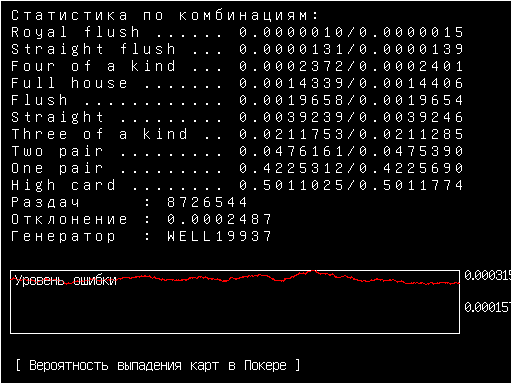

Делать новостные странички запарно и они не показывают всех нововведений игры - буду выкладывать реже и собирать сразу по несколько обнов в одной новости. Это всё не скоро.

Подробно
Например, между новостью про табличку с эпилепсией и следующей, было изменено управление, пофикшен графон, добавлены эффекты и улучшен рандом, но страничка с новостью была бы лишь о тестах рандома и не отражала реальность. Это я заметил в логах комитов, там реально куча всего упускается. На этом моменте я должен был бы начать городить базы данных и автоматическую генерацию страниц, но нафиг надо, я что программист по вашему? Буду теперь делать длинные страницы с описаниями и только в особых случаях при значимых релизах.
Единственный человек, который хоть что-то понимал в моём коде и чекал этот сайт - умер, так что особого смысла нет лепить эти страницы для нонеймов. Если вы прям тащились от этого постинга, то пишите мне на мыло, верну. Я хотел через сайт видеть проделанную работу по игре, но HTML с одной картинкой это так себе, а история комитов в гите оказалась в 10 раз информативнее.
Пока не знаю как будут выглядеть новые новости, возможно как длинные статьи. Для удобства, разграничу старый формат и новый двумя разными ссылками для перехода. Когда я реально объявлю о выходе игры, станет понятнее что именно люди хотят здесь видеть, а пока сайтик помрёт на месяц. О новинках можно узнавать через github/gitflic, если найдёте там кнопку истории комитов.